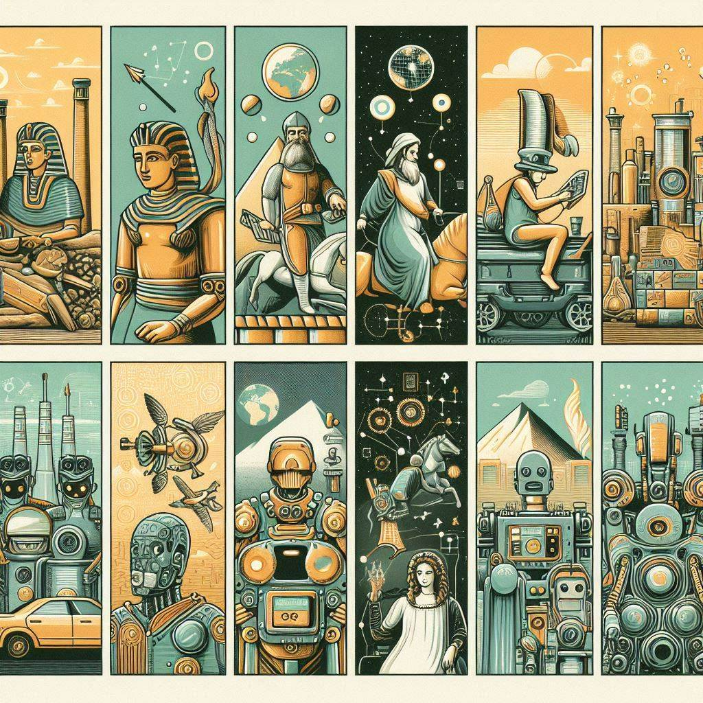
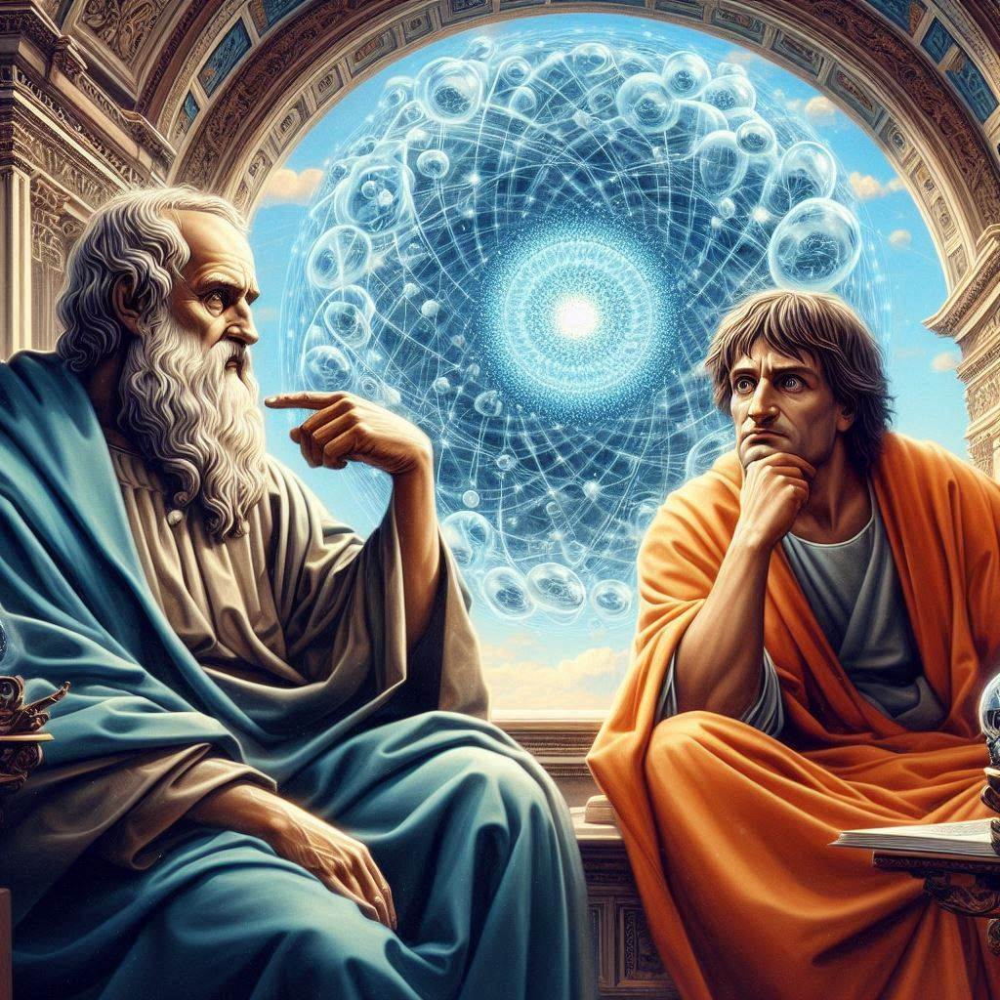
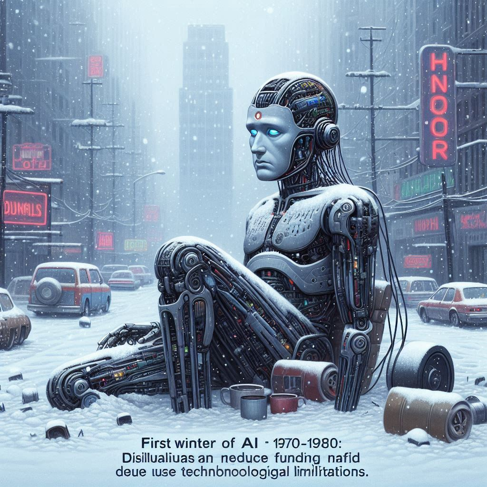
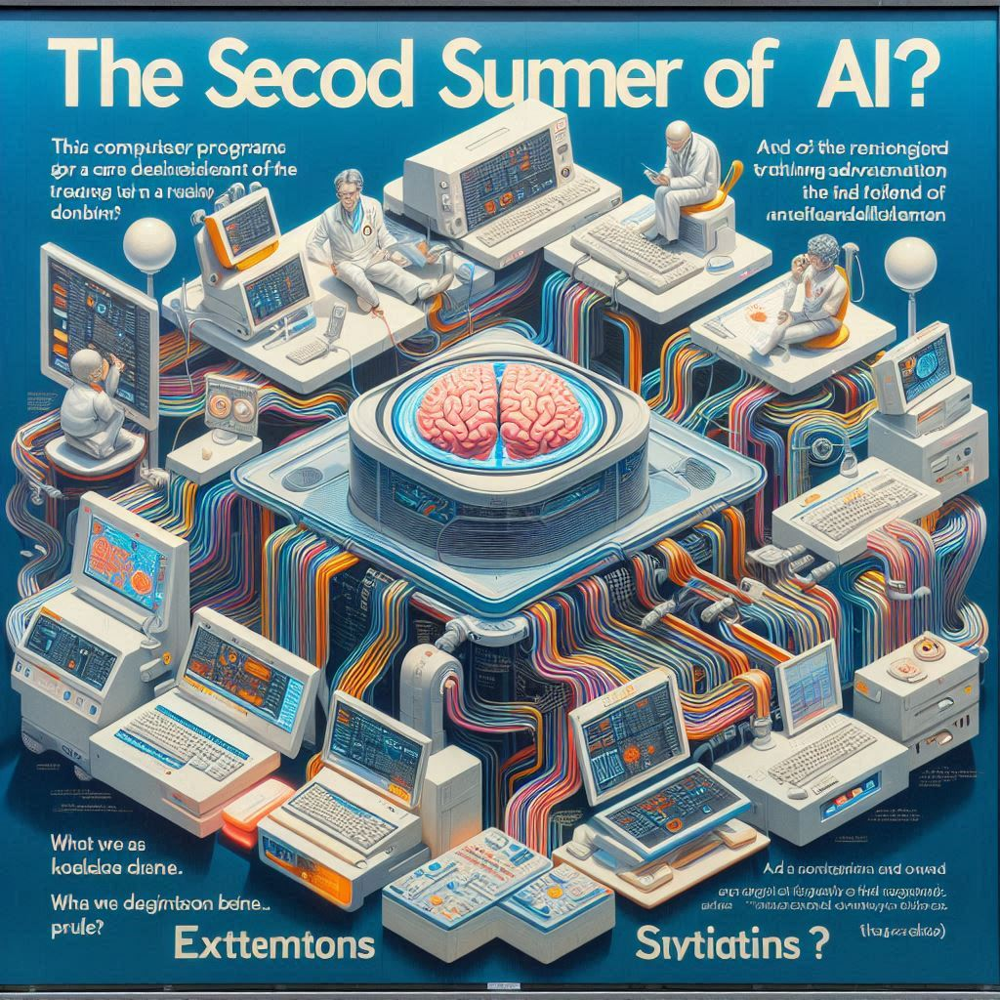
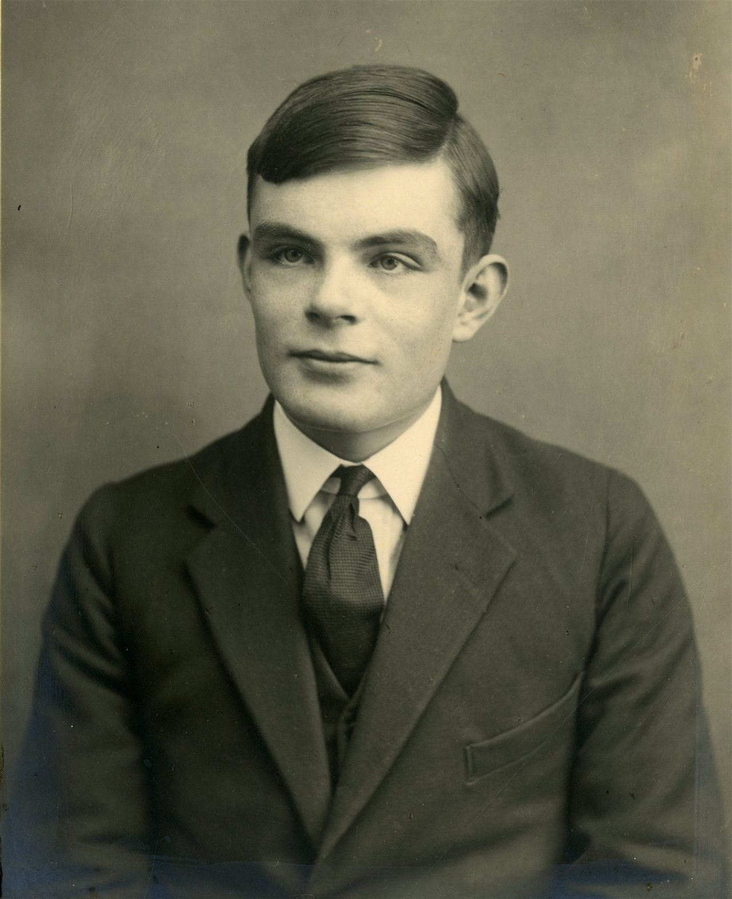
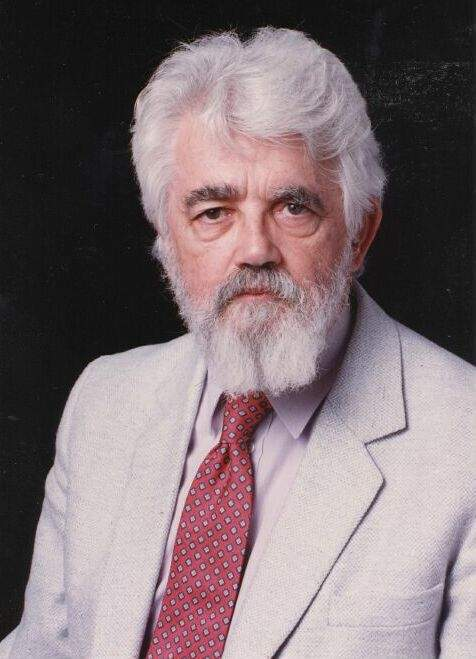

2. Historia y desarrollo
.......
Contenido
2. Historia y desarrollo

La inteligencia artificial (IA), la idea de crear máquinas pensantes, es un concepto que ha fascinado a la humanidad desde la antigüedad. Orígenes míticos: Desde los autómatas de la mitología griega, la IA ha sido un tema recurrente en la cultura humana.
Los primeros filósofos: Aristóteles y Descartes ya reflexionaban sobre la posibilidad de una mente artificial.  Nacimiento de la IA como campo de estudio: Conferencia de Dartmouth (1956): Marcó el inicio oficial de la IA. Años dorados (1950-1970): Gran optimismo y primeros logros en áreas como el ajedrez y la traducción. Primer invierno de la IA (1970-1980): Desilusión y reducción de fondos debido a las limitaciones tecnológicas. 
Renacimiento de la IA: El "Segundo Verano de la IA" (1980-1990) fue un período de gran entusiasmo y avance en el campo de la Inteligencia Artificial, marcado por el auge de los sistemas expertos.  ¿Qué eran los sistemas expertos? Los sistemas expertos eran programas informáticos diseñados para emular el razonamiento de un experto humano en un dominio específico. Estos sistemas utilizaban una base de conocimientos y reglas para tomar decisiones y resolver problemas complejos. Por ejemplo, un sistema experto en medicina podía diagnosticar enfermedades basándose en los síntomas del paciente.
¿Por qué fue tan importante este período?
- Financiamiento:** Hubo un aumento significativo en la inversión gubernamental y empresarial en la investigación de la IA, lo que permitió a los investigadores desarrollar sistemas expertos más sofisticados.
- Aplicaciones practicas:** Los sistemas expertos encontraron aplicaciones en una amplia gama de campos, desde la medicina hasta la ingeniería, demostrando el potencial de la IA para resolver problemas del mundo real.
- Desarrollo de herramientas:** Se crearon herramientas y lenguajes de programación especializados para el desarrollo de sistemas expertos, lo que facilitó la creación de estos sistemas.
Tercer verano de la IA (2010-presente): Revolución del deep learning y avances significativos en diversas áreas. Este término se utiliza para describir la revitalización de la investigación y el desarrollo en IA que comenzó alrededor de 2010. Al igual que los "veranos" anteriores, se caracteriza por un gran entusiasmo, inversiones significativas y avances revolucionarios.
¿Qué es el Deep Learning y por qué es tan importante?
El deep learning es un subcampo del aprendizaje automático que utiliza redes neuronales artificiales con múltiples capas para aprender de grandes cantidades de datos. Estas redes neuronales son inspiradas en el funcionamiento del cerebro humano y son capaces de aprender características abstractas de los datos, lo que les permite realizar tareas complejas.
El deep learning ha impulsado avances significativos en una amplia gama de áreas, incluyendo:
Aplicaciones del Deep Learning
- Vehículos autónomos: Percepción del entorno y toma de decisiones.
- Asistentes virtuales: Mejora en la comprensión del lenguaje natural.
- Diagnóstico médico: Detección temprana de enfermedades.
- Finanzas: Detección de fraudes y predicción de mercados.
- Entretenimiento: Creación de efectos especiales y contenido personalizado.
Factores que Impulsan el Deep Learning
- Disponibilidad de datos:** Gran cantidad de datos para entrenar modelos.
- Potencia de computación:** GPUs y TPUs aceleran el entrenamiento.
- Nuevas arquitecturas de redes neuronales:** Redes convolucionales y recurrentes.
Desafíos y Consideraciones
- Sesgos en los datos:** Perpetuación de sesgos presentes en los datos.
- Interpretabilidad:** Dificultad para entender cómo los modelos toman decisiones.
- Privacidad:** Preocupaciones sobre la recopilación y uso de datos.
Figuras destacadas en la Inteligencia Artificial
Figuras Destacadas
- Alan Turing:
- Padre de la informática.
- Propuso el Test de Turing.
- Videos explicativo de su historia y aportes:
- John McCarthy:

- Acuñó el término "inteligencia artificial".
- Video explicativo de su historia y aportes:
- Marvin Minsky:

- Pionero en redes neuronales artificiales.
- Video explicativo de su historia y aportes:
- Geoffrey Hinton, Yann LeCun, Yoshua Bengio:
-
- Padres del deep learning.
-
Video sobre ellos 3 y el deep learning: